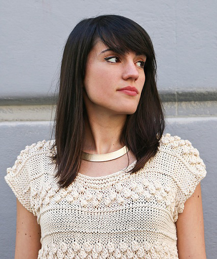

Sobre mí
Raquel Porter (Valencia, 1988), es graduada en Diseño de Moda por la Escuela de Arte Superior de Diseño de Valencia.
Siempre ha estado despierta su pasión por el mundo audiovisual y del espectáculo, por ello, enfocó su carrera hacia este ámbito en su estancia de un año en Bélgica, trabajando en el Thèâtre de Liège.
Al terminar sus estudios, se establece en Madrid, lo que le da la oportunidad de completar su formación en Sastería Cornejo, trabajando en la elaboración del vestuario de filmes y series de renombre, lo que le permite más tarde trabajar con figurinistas como Pepe Corzo para la ópera “Pinocho” o Gabriela Salaverri para “Los elementos”, “Los otros Gondra”, “Pulcinella” y “Le Cinesi” entre otros. Paralelamente, trabaja durante cuatro años para la marca internacional de punto We are Knitters como jefa de diseño donde, a su vez, ha podido colaborar con diseñadores como Juanjo Oliva y marcas como Anthropologie, Oeuf NY o Balzac.
Ha llevado a cabo en solitario el vestuario de series de televisión como “Diumenge Paella”; videoclips para artistas como Dvicio, David Otero o Efecto Mariposa; además de cortometrajes como “El fotoviaje de Carla” con Fran Gas, “Taro” con Daniel Rebner o “Ashes” con Fernando Gomez, ganador éste último del premio Astarté a mejor vestuario en el Festival Ibicine.
